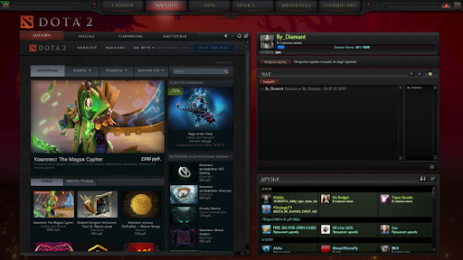
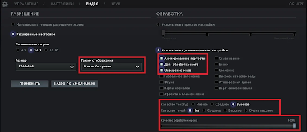

Первые шаги самые важные в любом деле и Дота не исключение. Перед тем, как начинать свой путь в этой сфере, требуется настроить рабочую среду. Вообще, игра нетребовательна к мощностям компьютера, поэтому “жрать” ресурсы 24/7 она не будет. Однако и здесь предполагается практически полное снижение графических настроек для получения более высокого показателя ФПС. Предлагаем рассмотреть три основных момента, после изучения которых можно смело переходить к геймплею.
НАСТОРЙКА КЛИЕНТА

Прежде чем приступать к графике и управлению, рекомендуем хотя бы пару минут уделить изучению интерфейса клиента. Взаимодействие с ним - половина игрового времени. Отсюда пользователь может попасть в меню обзора героев и магазин, просмотреть базу знаний, пообщаться с друзьями или найти новых. В общем, игровой клиент является своеобразным навигатором в мире Dota 2 и его знание упрощает жизнь юзеру во всех ее аспектах.
ГРАФИКА

Переходим в вкладку Настройки - Видео
Разрешение экрана. Рекомендуем выставить на “На весь экран”, чтобы получить максимально возможный эффект.
Раздел “Обработка”. Именно эти настройки будут составлять ваш ФПС, поэтому подойдите к манипуляциям с ними основательно - лишнее уберите, нужное включите.
Общие параметры (текстуры, эффекты, тени). Рекомендуем выставить все на низкие значения.
Максимальный FPS. Интересный параметр, если учесть, что каждый хочет добиться играбельного показателя у счетчика кадров. Рекомендуем выставить на максимальные значения, но в случае использования монитора 60 Гц - выставляем соответствующие цифры под герцовку.
МОИ НАСТОРЙКИ ГРАФИКИ
КАЧЕСВО ТЕКСТУР
КАЧЕСТВО ЕФЕКТОВ
КАЧЕСТВО ТЕНЕЙ
СРЕДНЕЕ
НИЗКОЕ
СРЕДНЕЕ
Задания
В матче соревнуются две команды, каждая из которых обладает своим набором строений. Ваша цель - разрушить их. На карте располагаются четыре основных вида строений:
Руны - предметы, которые спавнятся на карте и усиливают способности героя. По сути, эффектов от них немало, но все они временны. Появляются рандомно во время матча. Всего есть восемь видов рун, отличающихся направлениями бафов:
Богатство (помогает увеличить размеры казны команды, действует потенциально (прибыль с каждой минутой возрастает);
Иллюзии (создает две полностью контролируемые иллюзии);
Вода (восстанавливает по 80 очков маны и здоровья).
Будьте осторожны! Если в инвентаре у героя имеется пустая бутылка, то взятая руна пополнит ее заряд. Ее активация будет доступна не сразу, а только после истечения определенного временного промежутка.
ПОЛЕЗНЫЕ СОВЕТЫ
Вот и подобрались к последнему и, наверное, самому важному пункту - советам для новичков. У многих после пары десятков каток уже возникнет “всезнания”, но это не так. Изучив героев, интерфейс игры, устройство матчей, роли в команде, вы получили лишь 50% возможных знаний. Впереди предстоит изучить наиболее эффективные тактики отыгровки на разных позициях, научиться правильно контрпикать и тому подобное.
Итак, совет номер один: прогрессируйте. Больше тренируйтесь, также не забывайте про теорию.
Совет номер два: общайтесь с командой. Здесь все понятно - игра строится на взаимодействии нескольких игроков, что проявляется на всех стадиях матча. Последний совет: анализируйте. Занимайтесь не только анализом собственных действий, но и общим послематчевым разбором. Особенно полезно, если состоите в какой-то организации (необязательно профессиональной).
Так же советую посмотреть даны видео ролики для более детальной информации